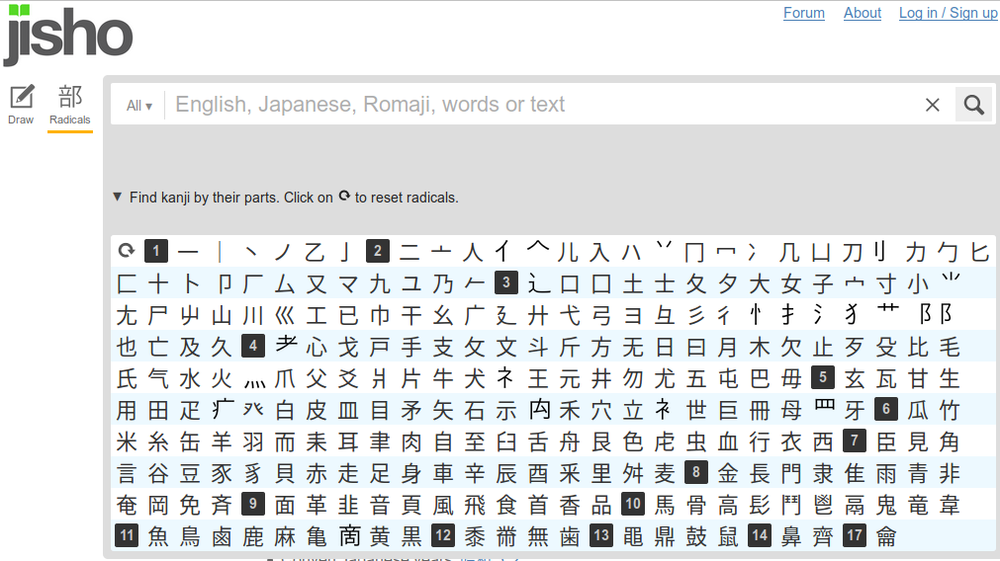

Chinese!
Let's compare the simplest chinese hieroglyphs to
alphabetic signs we know:
E & M use 4 strokes, so let's watch chinese
hieroglyphs of up to 4 strokes thinking of them as of
simple enough to make letters, and I take japanese form
of it, also to compare it with chinese hieroglyphs:

If they're so simple I will be able to
recognize them without a dictionary, so I think,
一 is one
乙 is 2nd (all the other
one-stroke symbols are not used as separated
hieroglyphs)
二 is two
人 is man (⺅is its abbreviated form - it's
always on the left of hieroglyph (there's no space
before is))
入 is enter
八 is eight
刀 is katana
力 is force
勹 is wrapping, but I didn't recognize it, I thought it's
taking
十 is ten
卜 looks like runic ᚿ and what do you
think it stands for in japanese? (suddenly I realized that
I looked japanese radicals in chinese dictionary. by
accident.
卜
is divining, telling a fortune, predicting, choosing,
fixing. I don't know what kind of fixing it stands for,
but other ones tell of what runes were used for in
Germania of Tacitus. It is not recognizable hieroglyph
though, I wasn't sure of its meaning.
九 is nine, but I didn't recognize it.
口 is mouth, but for
some reason I forgot it. Probably bugged by 囚
土 is soil
士 is samurai, but I didn't remember it
大 is big
女 is woman (notice, that woman is 3 strokes & man only 2 -
but it looks like it could be of 4 strokes, or it looks like
it could be of 5 points a venus star)
子 is child
小 is small
山 is mountain
川 is river
巛 is curving river, but
I didn't know it of course.
工 is worker but I
didn't know it.
干 is dried but I didn't know it
彡 three, hair ornament,
short hair or fur radical (words in grey are new to
me)
彳
stop, linger, loiter,
going man radical
I began to collecting some unrelated signs, I lost my way,
but back on track
心 is heart,
everybody knows it
手 is hand (I knew it but forgot
together with mouth) it looks like E
日 day, sun, Japan,
counter for days
曰
say, reason, pretext,
history, past, flat sun
radical (no. 73)
月 month, moon
木 is tree
止
stop, halt (I
thought it was stand as in stand up)
毛 is hair
气 spirit, steam radical (no. 84)
水 is water
火 is fire (funny that these three stand together. soil was
before)
there's a funny hieroglyph combining 火
& 水: 爆 bomb, burst open,
pop, split
so here I run a little forward in that table and give
another hieroglyph to making this complex one I know of:
井 is well (well,
well crib, town, community)
勿 not, must not, do not, be not (I thought it was an elephant)
五 is five
毋 do not, must not, be
not, mother radical (I knew it was mother,
but not radical)
And that's it, not
too many.
But if such method makes sense not only to learn them, but
also to find the primal forms in hieroglyphic canon, I'd
rather watch at divination bones, those should be simpe, I
remember I saw Eye there, Where's eye? It is 5 strokes.
Let's move on.
目 is eye
甘
sweet, coax, pamper,
be content, sugary
田 rice field
用 utilize, business,
service, use, employ
白 white
百 hundred
皿 dish, a helping, plate
血 blood
立 stand up, rise, set up, erect
位 rank,
grade, throne, crown,
about, some
⺅stands for a man (it's weird
that dictionaries don't tell it, probably those who write
those dictionaries want to earn on language lessons)
世 generation, world, society,
public. I knew it as world, and it's [se] and
looks like c so I say let it be one of those letters.
冊 tome, counter for books,
volume
母 now this is the mother I was looking for in 毋
耳
ear (this hieroglyph is so simple, that I must go on. Why do I torture you with this? I write this
book for myself, it's my draft now. I should have split this
text long ago, but it's too late to do it, let you see how I
work, so you will see discoveries as they happen and you will
calculate probability of these thoughts being apophenia - I
bet on it's being valuable science, you should read further if
you agree. You may write to me if you don't.
But I realize 耳's almost indistinguishable
from 目
So let's search those hierogliphy, which may relate to
european letters to see if we can find anything out of
this experiment:
一 is I because it sounds
like [i] and as numerals it's also 90 degrees
to I
人
looks like greek (and russian) Λ and it is transliterated as
Ren, it sounds as Yen, and when I studied chinese the guy who
taught me told that it's not [y] but [j] which could be
difference of mandarin & cantonese. I still don't know it. I
only know tea is te in cantonese of HongKong thus tea in
english, and cha in mandarin of Beijing thus чай in russian. But
google pronounces 茶 as cha, thus it's mandarin
But 人 still feels as it is as
basic as A. out of my mind it's li or
ri, and stands for man, but is it so.. or Λ?
Yet speaking of [y] it looks like upside down Y. (you should only fancy this part if you
know chinese)
(because I don't know chinese, don't learn it
here)
力 is K not only because it looks like one,
especially in the form of か
but also because sounds か as Ka. ᚳ also can be related. or not, but if it helps you to link these
pieces in one lace, it is.